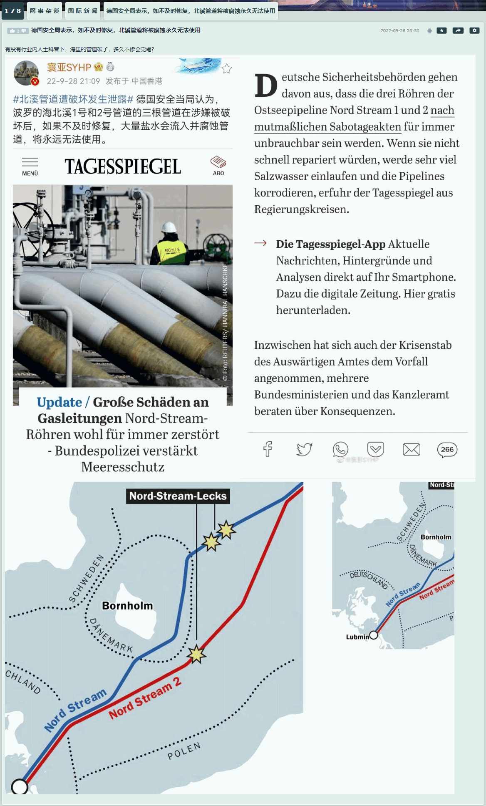
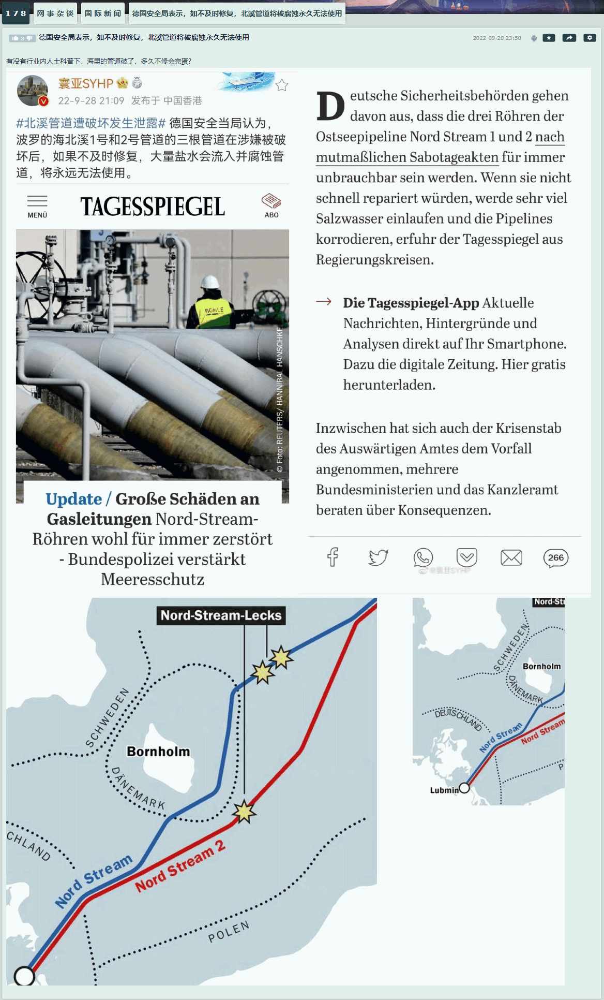

fanhan-inside
先备份情报兼素材：
范某截图备份于此


顺便写几句有点关系的。最近又看见又有谁谁「写小作文」了，除了「神转折骚操作」之外没有其它目的。
不过呢，「神转折骚操作」的高潮已经在「蒋凡后院起火」那次迭起过了嘛⸺我这「忠实记录历史」的旁观者都能总结出美食「九转大肠」来还意犹未尽⸺繁荣的简体中文互联网上活跃的多频道网络媒体（如果工资稳定保证各工位担当发挥水平稳定的话）再玩花活不会超过天时地利人和一应俱全的那套文案。
前一篇日志妄图自我超越，根据眼熟的那些砥砺奋进十年来追着我狂喷的「多频道网络」媒体老朋友们（由于欠饷而有气无力的各工位担当炮制的牵强附会破绽百出的歪理邪说）的一贯口径，先罗列了十层递进关系的剧情，以「安倍平账国葬」为高潮，后面补个尾声，见好就收了。
再往后还有没有如此充沛且应景的素材⸺除了脑壳里只有红白两色液体的肌肉棒子之外，接受过义务制教育的人民群众不需要色目情报掮客伙同娱乐至死の色目逗哔掰开了揉碎了解读⸺可以提供如此丰富的舞台效果，现在还不知道。
总之，权威机构认证的直系血亲当面质疑我的身份证之存在唯一稳定性已经整整三年了，咋没有这三年（乃至上溯到据骗子告知有骗子于2019年使用“微信”注册“京东金条”账户当时）当中运作人脉冒名顶替的「微信用户」打着我的旗号到处招摇撞骗为非作歹，惹毛了大批雌权主义者及其舔狗蜂拥而上写我的「小作文」呢⸺我憋着搜集这些素材写「大作文」呢！
fanhan-inside
顺便举个例子解释什么叫「大作文」。
先看情报兼素材（就是砥砺奋进十年来色目情报掮客追着我狂喷并有娱乐至死の色目逗哔阴阳怪气敲边鼓捧场说风凉话的那种「小作文」体裁）：
范某截图备份于此


然后我就用这些情报兼素材，写了篇「大作文」《范版西幻设定集》之十七〈冠由下生乱自上作〉，以下摘录片段：
卡壳世界・作文

就是这样，码字时按照职业习惯「无一字无来历」而已。
fanhan-inside
补充情报兼素材 ：
范某截图备份于此
 

先直接说关键之处：
砥砺奋进十年来叫嚣着「家里有矿」于是收买了大批色目情报掮客裹挟大批娱乐至死の色目逗哔追着我狂喷并且豢养了大批江湖好汉草莽豪杰纠集大批地痞流氓泼皮无赖绕着我转悠为非作歹的「富二代」它们家老爷子老太太在「苏共中共二十大」上没能冻蒜中央（候补）委员……会发什么什么事情？
上面这个尖锐的问题很好解答：
那么进里屋听秘密报告的待遇就没戏了，没准自己还成为秘密报告上面罗列的人名⸺当然是反派，没准还是典型。
补充点背景：
十八个大投票的时候延期了一段时间，就为了把谁选为「中央候补委员」。有关部门临时工颇有北洋风采，有组织有纪律还有家伙事儿，碰上「选举事故」了不用摔杯为号就蜂拥而出，按照组织分配的人盯人战术一个个党代表「做工作」直到那谁「选上」为止。
或者直说了吧：
中央候补委员本来就是按照得票数字从前往后排列，若是截止到那谁为止恐怕万八千人都有了⸺每年都要去鸟巢开会，全党全军全国各族人民脸上不大好看⸺所以需要走通「人脉」修改「考试成绩」把那谁的「名次」往前提到既定名单末尾。
而十九个大之上也有戏剧性效果，在《范版东幻异闻录》题外话〚四〛当中已经备份了「码字事故」的前因后果：
邦昌時代・別題
这都是小意思，对于字面意义上的「换届」，要参考十年前发生的事情：十八个大之前薄熙来被拿下，之后周永康被拿下，然后「肃清余毒」肃了近十年，无论哪儿拿人都是这套说辞。
薄熙来也就罢了，以前有过先例，而涉及周永康就有说法了，除了「刑不上常委」的潜规则之外⸺没有任何白纸黑字的档案文件记载，也不会有任何权威机构认证这种说法的真实性⸺就是「谁先坏了规矩」的真理标准大讨论：
「百万雄师已经把北京城塞满了，再从外省抽调狼牙棒进京占地盘，就会有“武直十”在头顶盘旋」「条子跟错了人，不是假的也是假的」这种说法，就是那时候开始流传的。
所以，今年「富歇转世灵童」被拿下，那么去年在各大权威机构当中呼风唤雨的人民警察⸺保护伞没出事那么假的也是真的，补办个「下放基层挂职锻炼」手续就能把在实体派出所办公室当中坐稳实体工位签署实体文件之类活动都合法化，而一旦保护伞出事，那么真的也是假的⸺都有多少被权威机构认证为「距离警察局长住址几百米的印度假警察局当中身着横店戏服的演员」呢？
尤其是最近「唐山烧烤店打人事件」，普遍共识都是「被拉清单的这票混混的头顶保护伞倒了」，这种时候就要举一反三触类旁通，必要的时候还得逆向思维：
如果到处拉票贿选的党国栋梁青年才俊「富二代」同时还在到处约谈江湖好汉草莽豪杰甚至地痞流氓泼皮无赖，指天发誓拍胸脯保证「爷冻蒜稳得一哔，真出选举事故了，你把我脑壳拎走」……于是在「期货保护伞」包庇之下，鸡鸣狗盗之徒绕着我为非作歹十年整，真等开会了丫牛哔哄哄出场企图全票冻蒜……未果沦为笑柄，之后会发生什么事情？
fanhan-inside
补充情报兼素材：
范某截图备份于此


长话短说，可以结合个人亲身经历简单解读：如果「未办理暂住证の外地来京撒谎偷窃诈骗务工人员」随着经济形势下行不能继续给「中央军委/政法委」的保护伞提供资金以供贿选了，眼瞅着就要被遣返……这时候还没到苏共中共二十大召开，随时可能发生包括但不限于肉体消灭的各种情况，还需要这批炮灰耗材「做事」的保护伞会怎么处理？
很简单，先通过「人脉」直连户部刑部服务器筛查大数据，找到像我这样的户口本上的名字逐个消失最后只剩下自己的「北京市常住人口」，再通过「人脉」约谈相关户口所在社区的「防疫部门」做到隔绝内外（我明知道南里有一堆证件乃至财产，但是回去也进不去小区），然后「走私军火毒品人口」的歹徒就可以冒名顶替扎根了……南里的某个老太太在2012年我回去给户口本奶奶大同文盲石老太太办丧事的时候就恶狠狠的盯着我，今年上半年还特意到北里来盯着我呢……估计是外地甚至外国走私团伙骨干的家属。
不惮以最大的恶意揣测，我在南里的住宅已经被租出去至少半年了，租金都让拿着我证件的骗子收了⸺混混放话「全球遭瘟就是给你小子一个人准备的」并非吹牛哔，最起码在阻挠我回去弄清真相这件事上「防疫措施」非常管用⸺因为之前南里住宅就是「真・夜不闭户」，有「居委会」代管，太平间仵作说「死了好几天」的那个时间段都发生了什么，家贼攥在手里的那堆证件（南里的户口本以及南里北里两套房本）都用来干什么了，「官方」⸺除非认为街道办事处没有行政级别⸺肯定知情。
本来的如意算盘就是把我憋死在北里，然后南里就有本来应该被遣返的「走私军火毒品人口」的歹徒冒名顶替落户了⸺我相信自打2002-2003年间大同文盲石老太太策反整个小区（街坊邻居各个看我的眼神都不对）之后，南里已经变成贼窝整整二十年了⸺这就是前一阵「海外爱国华侨」口音的「京东」员工联系我让出面注销「金条」账户的背景：其它「期货中央委员」也在往北京塞「自己人」，同时鸡蛋里挑骨头全面筛查其它「竞争对手」从家乡调来的部曲亲兵义子包衣（就是口音独特的江湖好汉草莽豪杰）以及在北京收买的内应（就是口音熟悉的地痞流氓泼皮无赖）并举报之。
fanhan-inside
补充舆论：
范某截图备份于此

简单解读：
这不就是传说中的「麻将精神」么？看住下家，盯着对家，防着上家，自己糊不了也不让别人糊。
旁征博引：
台湾作家柏杨先生在《丑陋的中国人》一书中感叹：“一个中国人是条龙，三个中国人是条虫；一个日本人是条虫，三个日本人是条龙”。
然后先插播其它情报兼素材，从「小作文」乃至「大作文」更进一步到上述引用的出处「划时代大作」相关话题当中：
邦昌時代・別題

⸺《范版东幻异闻录》题外话〔48〕邦昌時代の文化产业と武侠题材
我大约是从2004年开始在起点充值看网文，一直持续到充不进去的时候（2020年7月27日）。从那时到现在两年多了，没有再给任何「内容供应商」充值过，并且没有任何「网购」，信用卡仅限超市购物。并且转过年来（2021）新寄到的信用卡，由于要用「哎屁屁」开卡，迄今为止都没有开卡，遑论使用。
这也不是孤证，之前一直使用的收费邮箱，本来也是可以通过信用卡走「银联」渠道续费的，结果有一天通知只能使用「微信」充值，于是只好放弃，继续使用包括但不限于微软谷歌在内的大手情报工学会社提供的免费邮箱。
还有许多零碎事件，从2019年中开始逐步升温。各种色目情报掮客与娱乐至死の色目逗哔乃至现实中的色目混混鸡鸣狗盗之徒，不约而同的正告我「不用微信就得用支付宝，你丫选一边站队吧」。其中「微信」的广告力度空前强大，也有江湖好汉草莽豪杰地痞流氓泼皮无赖说走了嘴：当时马云已经退休，由张勇接班，后来「太子」蒋凡还从合伙人变打工仔；但是马化腾并没有退休，而张小龙还不能抢班夺权……未果沦为笑柄。
这些事情与我没关系，因为我不用智能手机。幸亏如此，否则2019年用「微信」注册「京东金条」账户的那个冒牌货，所有为非作歹都不需要权威机构认证，在腾讯内部甚至微信事业部内部，就能把全套档案伪造完毕⸺然后假惺惺的叫嚣着有法可依有法必依执法必严违法必究，以传播南山必胜客的荣光。
严密的考虑问题，就算我一直也没用过智能手机⸺并且办理联通宽带业务时送的4G卡号还从来没用过已经伴随着业务结束而终止了，前一阵特别确认了这件事⸺也不排除还有个冒牌货在2019年泽连斯基刚冻蒜大盖特曼而我刚转让了原公司股份从此再无关系之后，用「支付宝」注册了什么金融账户从事撒谎偷窃诈骗活动，眼下只不过还没曝光（于是暂时没有「海外爱国华侨」口音的党国栋梁联系我露面注销）而已。
从这个角度再回顾「健康码」「行程码」之类必须智能手机才能运作的认证系统，以及之前多年就已经外包给「微信」「支付宝」的各种国家机器经常项目业务，境内十亿「移动互联网用户」当中真不定有多少人在2019年就被腾讯内部人士通过「技术」手段注册了大批撒谎偷窃诈骗账户⸺当然不会有任何「系统」通知⸺一直运转至今。
囧斋起居注・日记